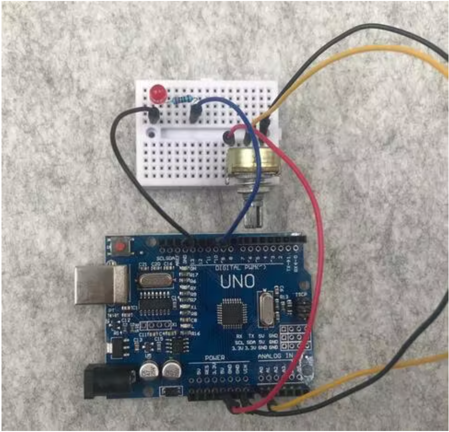

<div class="container-fluid">
<h1> Week 7: Electronic Output Devices </h1>
Last updated: March 22, 2022
<h4> Part I: Controlling the Brightness of an LED with a Potentiometer </h4>
For the first part of our assignment this week, our goal was to use an input device and an output device we hadn't used before. For our last project, I used a microphone to measure sound and we played around with buzzers during class. Though we used LEDs earlier in the class, I hadn't used it for a project yet and wanted to try to use one for this week's project. I thought it was really neat using a potentiometer to control the speed of a motor a few weeks ago and wanted to try to control the brightness of an LED using a potentiometer for this week's project. <br>
<br>
<h4> First Few Tries </h4>
I tried to follow a few tutorials—for example, [here]( https://roboticsbackend.com/arduino-control-led-brightness-with-a-potentiometer/), [here](https://www.youtube.com/watch?v=RBYVUTIU4FE&ab_channel=JaysonHerlth), and [here](https://learn.digilentinc.com/Documents/385)—but couldn't get these to work, so I kept searching for one that would. During my trials to have one of the first examples work, I thought the setup and code looked good, but my LED simply didn't turn on. I certainly couldn't control the brightness of the LED with the potentiometer, and wanted it at least to turn on. Nonetheless, I kept trying to find an example that would work. <br>
<h4> Finding the Right Example to Follow </h4>
Eventually, I found an example that worked! [Here](https://create.arduino.cc/projecthub/wieselly/arduino-tutorial-using-potentiometer-control-led-light-0dbbd1?ref=part&ref_id=11332&offset=25) is the link to the page. It's an Arduino Project Hub website, which was really helpful. I used their breadboard set up and code for my project. Here is the code they use (there is an asterisk after the first <code> /</code> and an asterisk before the second <code> /</code> in lines 1 and 4, respectively):<br>
<br>
<code>
/* <br>
AnalogRead <br>
<br>
*/<br>
<br>
int ledPin = 10;<br>
<br>
int readValue = 0;<br>
int ledValue = 0;<br>
<br>
void setup()<br>
{<br>
pinMode(ledPin, OUTPUT);<br>
}<br>
<br>
void loop()<br>
{<br>
readValue = analogRead(A0);<br>
ledValue = map(readValue, 0, 1024, 0, 255);<br>
analogWrite(ledPin, ledValue);<br>
}</code> <br>
And here is the setup they give for their breadboard: <br>

Their example worked very well, and here is a video of me using the potentiometer controlling the brightness of the LED. <br>
<video width="720" height="480" controls>
<source src="initial_controlling_brightness.mov" type="video/mp4">
</video>
<h4> Trying to Control 2 LEDs</h4>
While the Arduino example was very helpful, I wanted to see if I could add to the code they provide and try to control the brightness in 2 LEDs. To do this, I added a few lines to the code and an <code> ledPin2</code> variable at the start.
Here is the final code that I used (again, (there is an asterisk after the first <code> /</code> and an asterisk before the second <code> /</code> in lines 1 and 4, respectively): <br>
<br>
<code>
/*<br>
AnalogRead<br>
<br>
*/<br>
<br>
int ledPin = 10;<br>
int ledPin2 = 8;<br>
<br>
int readValue = 0;<br>
int ledValue = 0;<br>
int readValue2 = 0;<br>
int ledValue2 = 0;<br>
<br>
void setup()<br>
{<br>
pinMode(ledPin, OUTPUT);<br>
pinMode(ledPin2, OUTPUT);<br>
}<br>
<br>
void loop()<br>
{<br>
readValue = analogRead(A0);<br>
readValue2 = analogRead(A0);<br>
<br>
ledValue = map(readValue, 0, 1024, 0, 255);<br>
ledValue2 = map(readValue2, 0, 1024, 0, 255);<br>
analogWrite(ledPin2, ledValue2);<br>
analogWrite(ledPin, ledValue);<br>
}</code>
<br>
<!--- how do the variables in the code work here? --->
In this code, the <code> ledPin</code> variables explain which wires connect to which LED. We start the values of both the <code> readValue</code> and <code> ledValue</code> variables at 0. Then, we set both modes for the ledPins as outputs because we want the LEDs to do what the potentiometer is instructing them to do. Then, we set the <code> readValue</code> variables to <code> analogRead(A0)</code> so that those <code> readValue</code> variables will read the input that comes from the potentiometer. You can see in the setup of the breadboard that the A0 pin connects to the middle pin of the potentiometer. Then, we convert the values for the LEDs to a 0-255 scale from a 0-1024 scale using the <code> map</code> function and <code> analogWrite</code> function to set the <code> ledPin</code> variables to the voltage that comes from the <code> ledValue</code>. Thank you again to the code from the Arduino website I used. In my explanation, I went through the code I used for my controlling of two LEDs. I tailored my explanation based on what I saw in the code which, again, came from the Arduino website. <br>
Here are a couple of pictures of the breadboard setup I used:
<img src="breadboard_setup.png"
alt="Arduino Example Setup"
width="720" height="480">
<img src="breadboard_setup_2.png"
alt="Arduino Example Setup"
width="720" height="480">
In the code, you can notice that I used pin AO for the <code> readValue</code> variable for both LEDs. I figured this made sense given that I was using the same potentiometer for both LEDs. Here is a video of what it looked like controlling both LEDs. My apologies for the strange quality; I wonder if it was the lighting in the room or something else, but I promise the LEDs looked more normal in real life!
<video width="720" height="480" controls>
<source src="brightness_of_2_leds.mov" type="video/mp4">
</video>
One thing to notice is that the brightness of the LED on the left is controlled by the potentiometer, but the LED on the right seems to simply go on and off once the potentiometer reaches a certain threshold. I tried switching the resistors for the 2 LEDs (they do not have the same resistance), but got the same result. I had hoped that the code would allow the brightness of the right LED to be controlled the same way as the brightness of the left LED, but at least the potentiometer is controlling that second LED even if not controlling the brightness of it. My guess is there's a change in the code I could make that would allow me to control the brightness of the second LED in the same way that I can for the first LED. <br>
<h4> Helpful Links </h4>
Links for projects I tried but couldn't get to work: https://roboticsbackend.com/arduino-control-led-brightness-with-a-potentiometer/ <br>
https://www.youtube.com/watch?v=RBYVUTIU4FE&ab_channel=JaysonHerlth <br>
https://learn.digilentinc.com/Documents/385 <br>
This website helped me with inspiration and gave me an idea for how to control the brightness of LEDs: https://tsevilla16.github.io/TeddySevilla-PS70/week8.html <br>
This website helped me with a simple blinking LED: https://create.arduino.cc/projecthub/rowan07/make-a-simple-led-circuit-ce8308 <br>
This was the Arduino Project Hub website I used (breadboard setup and code): https://create.arduino.cc/projecthub/wieselly/arduino-tutorial-using-potentiometer-control-led-light-0dbbd1?ref=part&ref_id=11332&offset=25 <br>
This website helped me find the text feature in Fusion360: https://all3dp.com/2/fusion-360-text-extrude-tutorial/ <br>
This was the YouTube Tutorial I used heavily for my ShopBot object: https://www.youtube.com/watch?v=uURKCrErYSM&ab_channel=NEWTechCreative <br>
<h4> Final Notes </h4>
Thank you so much to the teaching staff for their help with this project! <br>
Also, thank you to Nathan for helping me sort out issues I was having with iCloud and GitHub! It is so much better now!